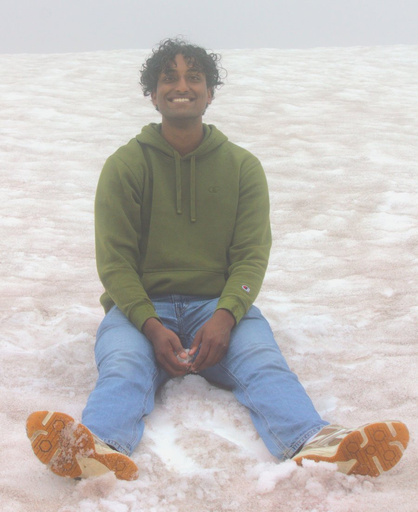

Eclectic, audio and mechatronics enthusiast, YouTube fanatic, and previous Boeing intern receiving a patent.

I'm a Mechanical Engineering student at the University of Texas at Austin, minoring in Sales and Marketing, graduating May 2027.
I like to work on things that directly impact human emotions. Whether that be the aesthetics of a design, the marketing of a product, or effective storytelling. I aspire to learn how to prioritize the emotions for anything I produce.
Hands-on roles across precision aerospace tooling at Boeing, large-scale warehouse automation installs at Amazon, campus makerspace leadership and electronics teaching for thousands of students at UT's Texas Inventionworks, and a published research project in high strain-rate materials science.
Publication: Simulation of High Strain Rate Contact of Single Crystal Al Spheres
Two faces of the same coin, pick a side
AR glasses, a hand-tracked RC plane, nanoparticle research, and a combat robot — CAD, PCBs, and builds.
View projects CreativeA 48-hour game jam entry, a mini-fridge game controller, and my YouTube videos — games, controllers, and editing.
Take a lookSee something you like? Feel free to reach out.
I'm always looking for a new adventure.